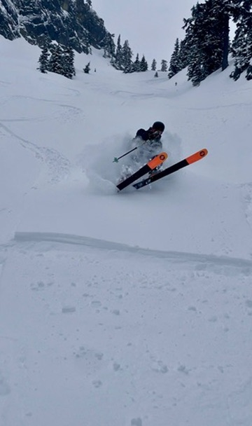
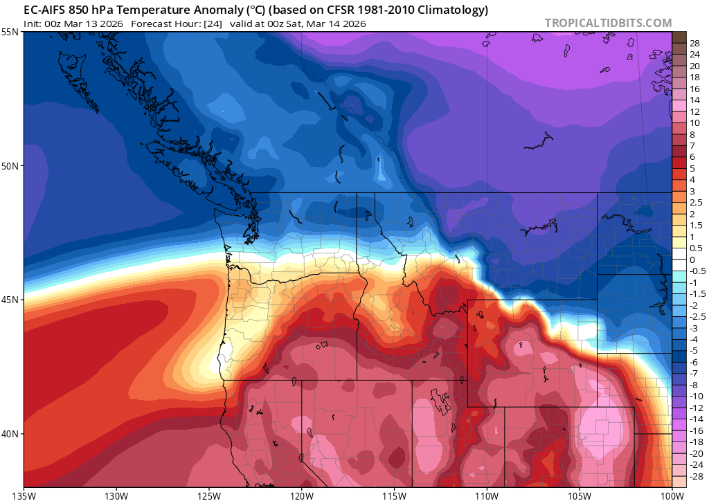
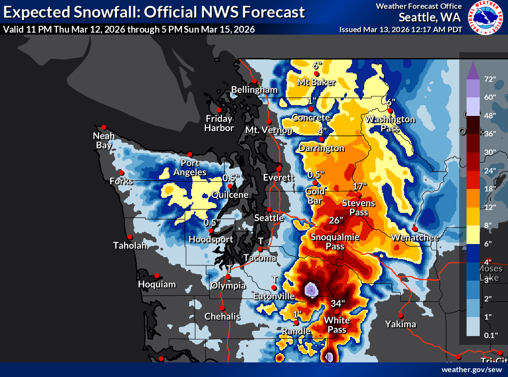
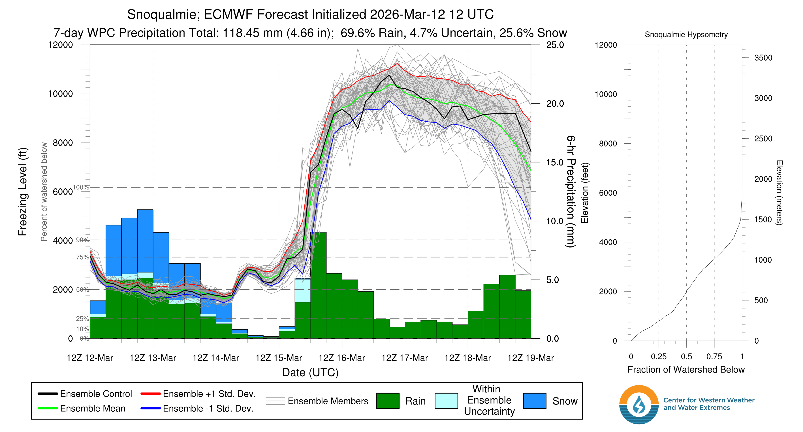
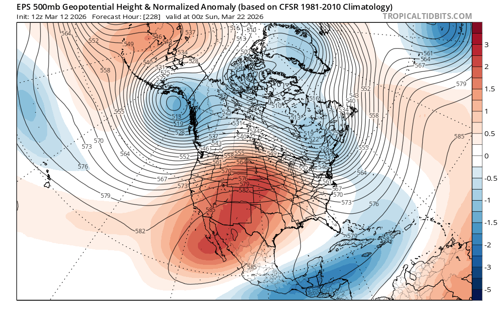
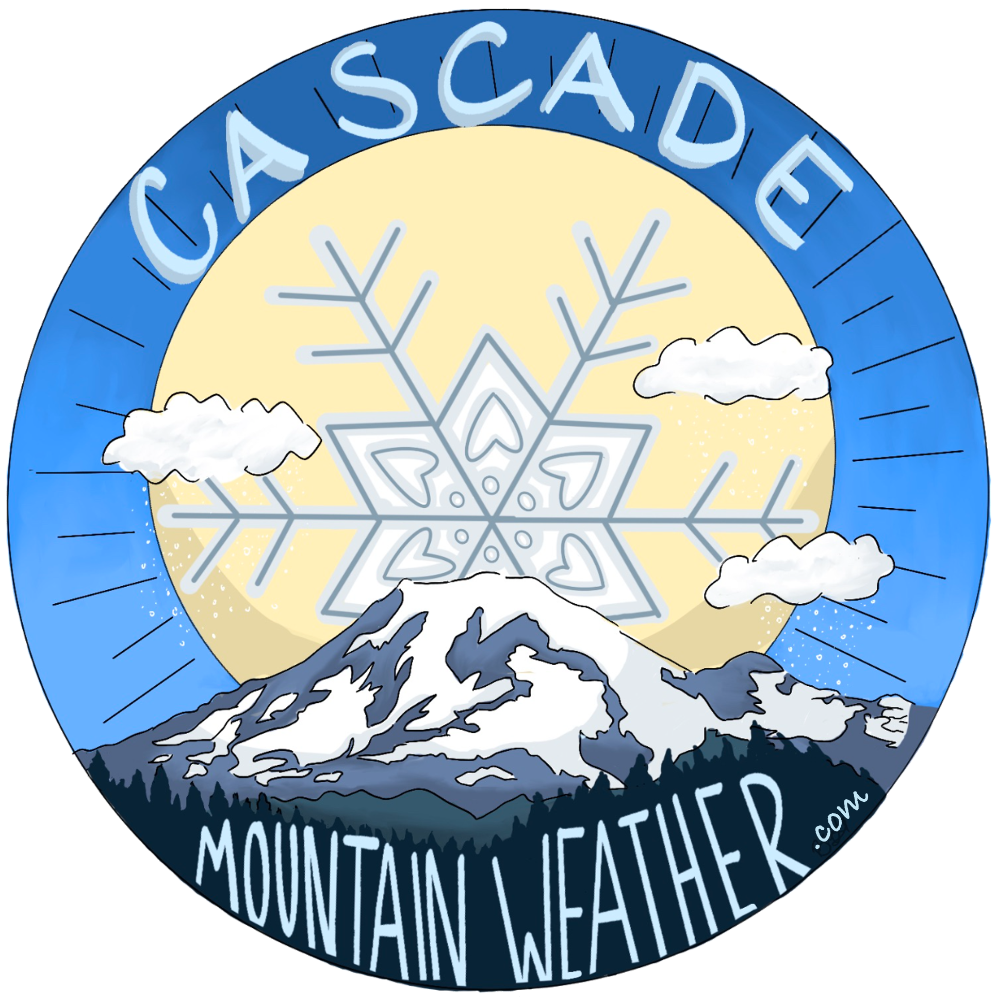

🚨 Stoke Alert: The best storm cycle of the winter is here, this is not a drill
Welcome to The Dendritic Growth Zone!
Past Week's Recap
It's finally here, the storm cycle we have been waiting all winter for. Save for a few hours on Wednesday, cold, moist westerly flow has been pumping inch after inch, foot after foot of snow into our mountains.
Last weekend brought significant rain to our beloved Cascade Mountains, decimating low elevation snow even further. However, everything changed Sunday night as a cold front swept through, ushering in freezing levels well below pass levels. A Puget Sound Convergence Zone (PSGZ) band of precipitation set up with the firehouse aimed squarely at Stevens Pass, which received over 20" of snow by Monday afternoon. Nearly all mountain locations across Western Washington have picked up significant snowfall. Some notable improvements to settled snow depth since last weekend include +42" at Stevens Pass (mid-mountain), +27" at Alpental (mid-mountain), and +33" at Paradise. And this does not even include Thursday night and Friday's bonus snow!!
Freezing levels briefly spiked Wednesday night as a warm frontal boundary raised up from the SW. Rain was reported up to 5000' across the state. Ski reports from Thursday were generally poor, with people mentioning that this rain-affected layer was grabby and annoying to ski whether it had begun refreezing into a crust or not. Luckily, the rain did not last long and snow quickly returned above 3000' by Thursday morning.
🧙♂️ Forecast Discussion
Short-term (Friday-Sunday)
So so good. This may be the greatest short-term forecast I've ever written for Cascade Mountain Weather. Remnant moisture from a weak atmospheric river is riding above a ridge of high pressure centered off the coast of Central California. Coupled with this feature is a strong jet streak (region of elevated winds within the jet stream) in the upper atmosphere. A little bit of chicken vs. egg here but the jet streak is associated with a very strong north-south temperature gradient. See the plot below for the gradient in temperature anomaly at roughly 5000ft in the atmosphere. In Northern WA, temperatures Friday afternoon will be running 5C/10F below normal while Southern Oregon is nearly 10C/20F above normal, lucky us!!

Precipitation will start dying off from north to south on Friday, starting with the Mt. Baker region around 7am. Stevens Pass
will be next, drying out around by 6pm, followed by Snoqualmie Pass around 10pm. However, by then, the mountains will have
received significant snowfall across the board. See the forecast table below for more info.

Medium-Term (Monday-Wednesday)
All good things have to end eventually I suppose, though the death of our resurgent winter will come all too soon on Monday as
a ridge builds aloft and the jet stream pushes north. A significant atmospheric river will take aim for Vancouver Island
Monday through Wednesday next week. For us in Washington, this likely will spare us much of the brunt of precipitation but
we certainly will get hosed by the torrent of warm subtropical air moving north. Look for freezing levels to skyrocket near
10,000' feet by the middle of next week. :(

🧙🔮🧙♂️ Reading the crystal ball - 7+ day outlook
We have very high confidence at present that next week will bring much warmer temperatures to the PNW (and record-breaking heat to the rest of the Western US, we're really the lucky ones). However, there is a growing possibility that cooler weather may return in the 10-14 day range (Sun 22 Mar to Thur 26 Mar). The signals here are not strong yet but it is encouraging to see both the GEFS and EPS ensembles converging on troughing in the Gulf of Alaska. This far out, weak agreement is about the best thing we could ask for.

🚧👷Cascade Mountain Weather Updates👷🚧!
Stickers have arrived! Give us a shout if you want one! Cascade Mountain Weather hats have been ordered and will be here shortly, so reach out if you're interested.

❄️ Snowfall
Weekend Snow Accumulation Forecast
| Site | Through 4am Saturday | Through 4am Sunday | Weekend Snow Accumulation (4pm Thursday through 4am Monday 16 Mar) |
|---|---|---|---|
| Mt. Baker (4500') | 4-8" | 5-9" | 9-14" |
| Washington Pass | 3-6" | 3-6" | 5-8" |
| Stevens Pass (4500') | 14-20" | 14-20" | 14-22" |
| Hurricane Ridge | 6-10" | 6-10" | 6-10" |
| Blewett Pass | 6-10" | 6-10" | 6-10" |
| Snoqualmie Pass | 20-28" | 20-28" | 20-28" |
| Crystal (5000') | 18-26" | 18-26" | 18-26" |
| Paradise | 38-50" | 38-50" | 40-54" |
| White Pass (5000') | 18-26" | 18-26" | 18-26" |
🧊 Freezing Level
- Friday: 1500-3500 feet (strong north-south gradient)
- Saturday: 2500-4000 feet
- Sunday: 3000-4000 feet (rise in evening)
🎿 Our Recommendations
Best Choice This Weekend: Snoqualmonix and Crystal on Friday and Saturday
It will be phenomenal, I promise. If you were ever looking for a "sick" day, Friday is the day. That being said, Saturday will be significantly less stormy with even better snow. Either way, this is shaping up to be an all time weekend. And to think we might even see the sun a little on Saturday too... very tantalizing. And for once this winter, Snoqualmonix reins supreme!
Runner-Up: Salmon La Sac or White Pass Backcountry to escape the crowds
I was out in the Salmon La Sac area the past 2 weekends and it was seriously grim from a snow cover perspective. However, it's nothing a good 20-30" of snow can't fix 😉
Honorable mention: Sunday
Sunday may get interesting if the sun comes out Saturday or if the looming AR starts up precip earlier in the afternoon. I do think that Sunday morning will be really good as well. Hard to go wrong this weekend.